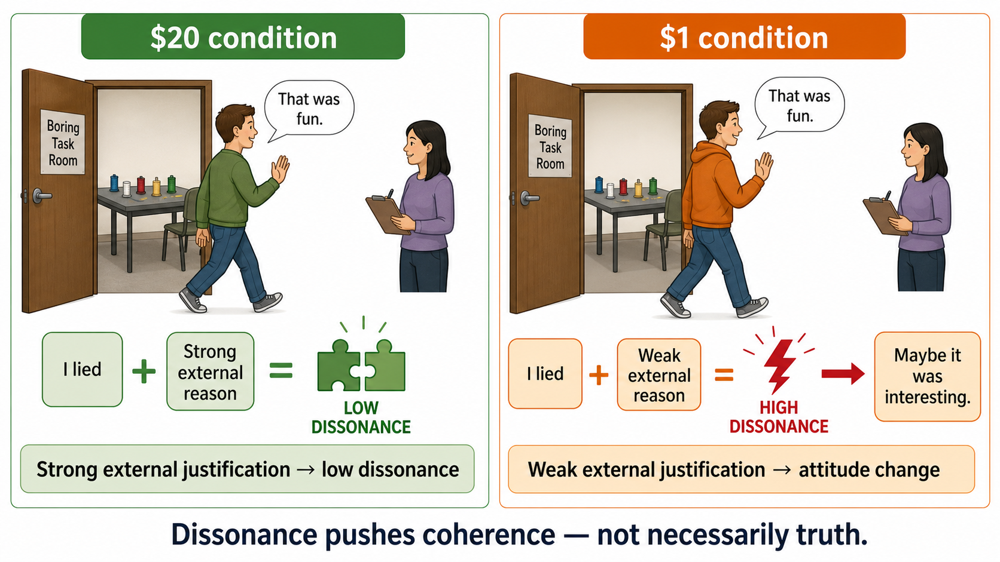
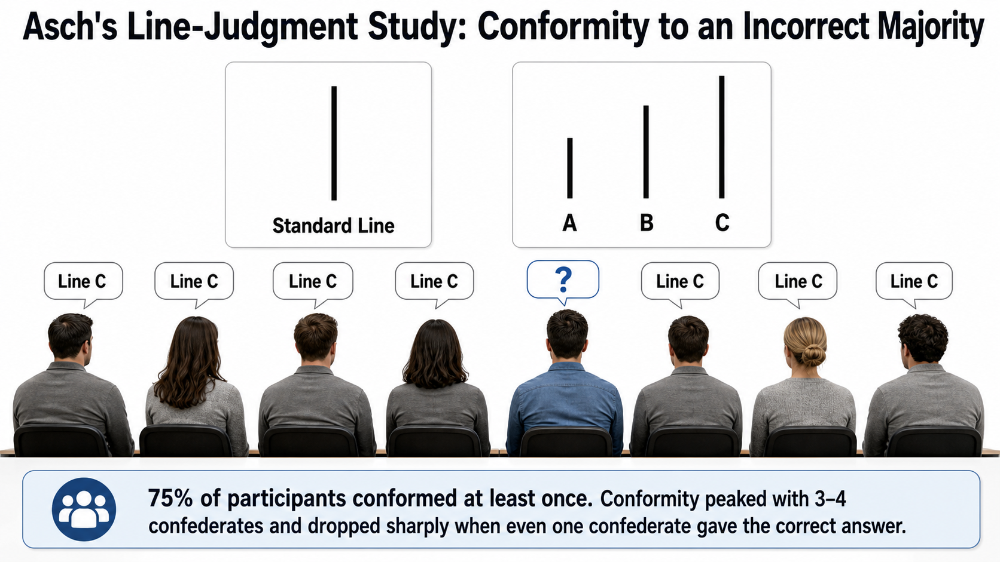
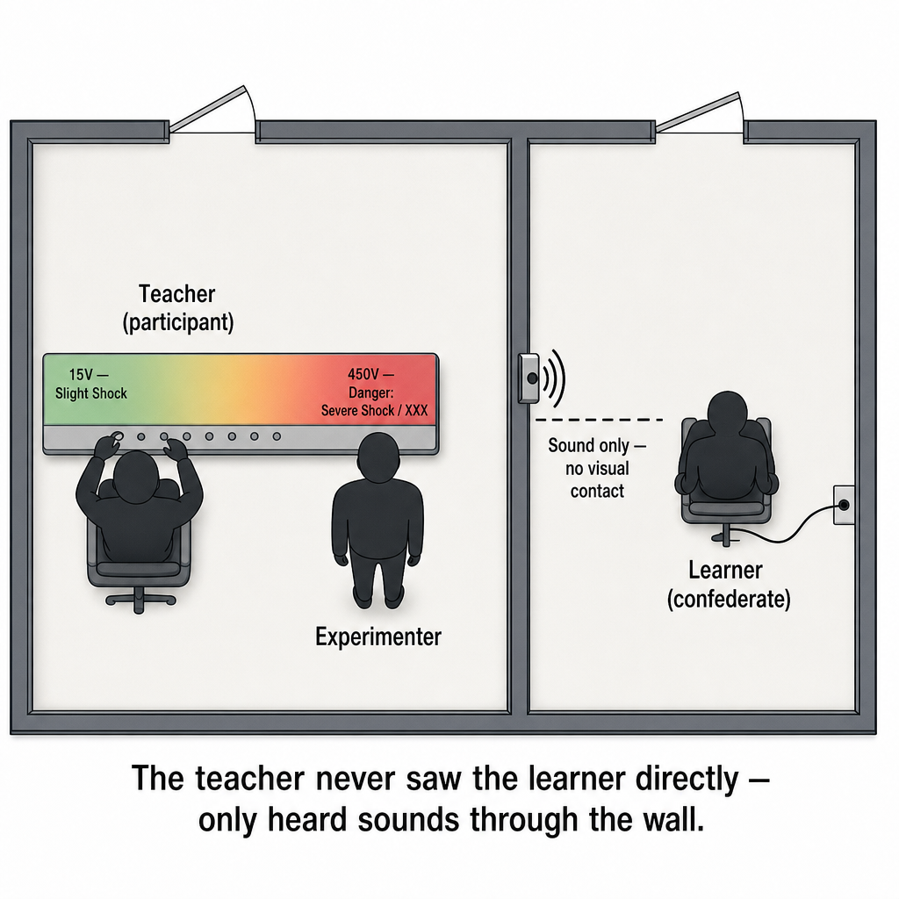
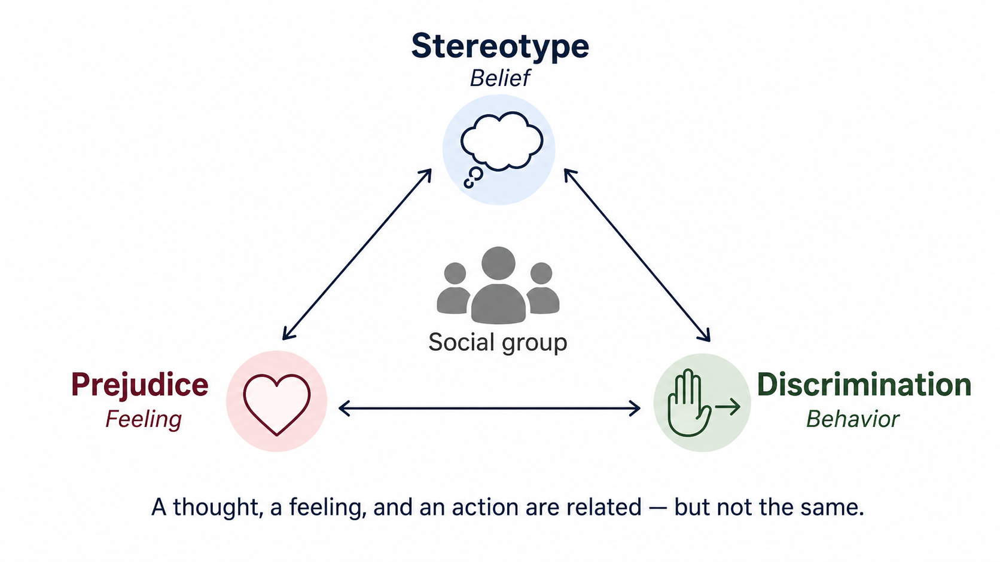
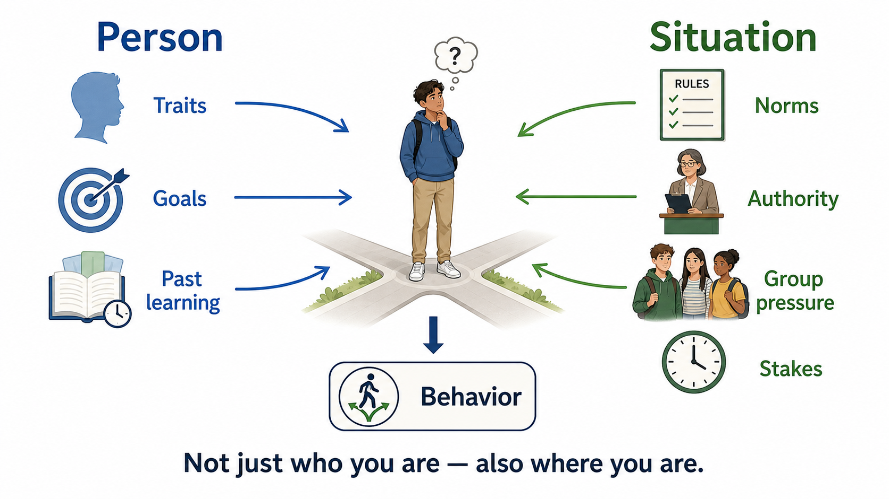
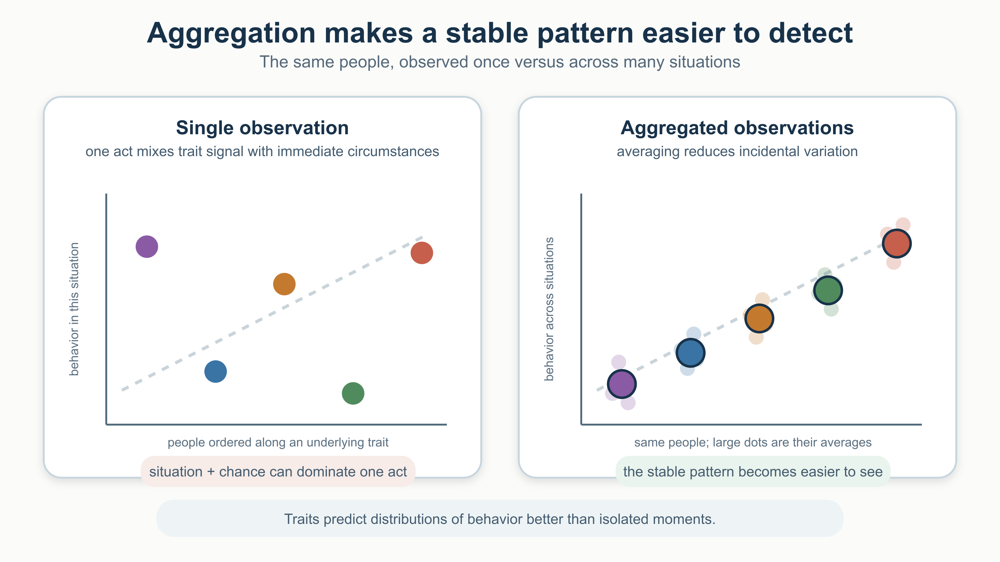
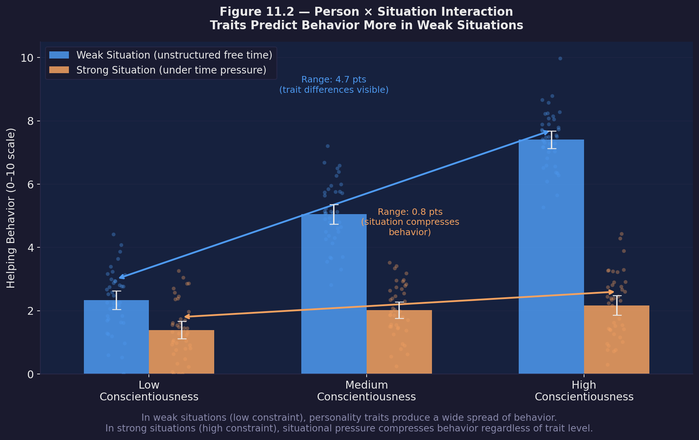

Social Psychology
In 1963, Stanley Milgram ran an advertisement asking for volunteers to participate in a "study of memory and learning" at Yale University. Participants were assigned the role of "teacher" and told to administer electric shocks to a "learner" in an adjacent room every time the learner made a mistake — increasing the voltage with each error. The shocks were fake, the learner was a confederate, and the screams of pain that came through the wall were a recording. But the participants didn't know that.
Sixty-five percent of participants delivered what they believed were the maximum 450-volt shocks, labeled "Danger: Severe Shock" on the control panel — not simply because a researcher said "Please continue," but because the entire situation was engineered to make continuing feel expected, legitimate, and incremental, one step at a time. Before running the study, Milgram asked a panel of 39 psychiatrists to predict how many participants would reach the maximum. Their consensus: about 1 in 1,000.
When people hear about the Milgram study, the near-universal response is: "I would never do that." Social psychology is, in large part, the scientific study of that gap — the space between who we believe ourselves to be and what our situations actually make us do. We are convinced that our judgments of others are fair, that our own choices are autonomous, and that group membership doesn't warp our thinking. The evidence suggests otherwise, systematically and predictably.
Where This Fits
Social psychology bridges the gap between the individual and the social world. This chapter builds directly on attribution and dual-process reasoning from Chapters 1 and 9, conditioning and observational learning from Chapter 7, and memory reconstruction from Chapter 8. Everything here — how we judge others, how we yield to or resist social pressure, how groups make decisions, how we help or harm — connects to personality, covered in Section 5 below (Personality does not have its own chapter; per Jon's Session 60 decision, it is folded in here), and forward to emotion, stress, and coping (Chapter 12).
Learning Objectives
- Explain the fundamental attribution error and self-serving bias, and distinguish the direction of each.
- Describe cognitive dissonance and identify at least three ways people reduce it.
- Explain what Asch's conformity study and Milgram's obedience study each demonstrated, and how they differ.
- Apply the situationist insight to real-world behavior while accurately representing what the Stanford Prison Experiment does and does not show.
- Define group polarization and groupthink, and describe the conditions that foster each.
- Distinguish prejudice, stereotypes, and discrimination, and explain social identity theory.
- Explain the bystander effect's five-step model and summarize the empathy-altruism model and the frustration-aggression hypothesis.
- Describe the four major traditions in personality psychology (psychoanalytic, humanistic, trait, interactionist), evaluate the evidence for the Big Five, and explain how the person-situation debate is resolved by an interactionist view.
Section 1: Social Cognition — How We Think About Others
Attribution: Explaining Behavior
Every day we watch other people act and try to figure out why. Attribution theory describes how we explain the causes of behavior, and our explanations fall into two broad categories. A dispositional attribution locates the cause inside the person — their personality, ability, or attitude. A situational attribution locates it in the environment — the circumstances, roles, or pressures they faced.
Neither is inherently wrong, but our default leans heavily toward disposition, and this lean is systematic enough to have a name.
The Fundamental Attribution Error
The fundamental attribution error (FAE) is the tendency to overestimate dispositional factors and underestimate situational ones when explaining other people's behavior. When a driver cuts you off, your first thought is probably that they're rude or aggressive — not that they're racing to the hospital. When a student does poorly on an exam, we are inclined to attribute it to low ability or poor effort rather than ask whether the test conditions were fair, the student was ill, or the topic was genuinely difficult.
The FAE is robust across many laboratory paradigms. In a classic demonstration, participants read pro- or anti-Castro essays and were told explicitly that the writer had been assigned that position — no choice involved. Even with that information available, participants still rated the writer as personally holding the view expressed (Jones & Harris, 1967). The situational constraint was right in front of them; they simply discounted it.
Cross-cultural research suggests the FAE is not universal to the same degree: it is more pronounced in individualistic cultures (which emphasize personal agency) than in collectivist cultures (which tend to frame behavior in relational context). This is itself an important reminder that "basic" social-psychological tendencies are not culture-free (Choi, Nisbett, & Norenzayan, 1999).
Self-Serving Bias
The self-serving bias runs in the opposite direction — not toward others but toward ourselves. We tend to attribute our successes to internal causes ("I earned that A") and our failures to external ones ("That test was unfair"). This is not simple dishonesty; it serves real motivational functions, protecting self-esteem and maintaining the sense that we are competent agents in the world.
Both involve attribution errors, but they point in opposite directions. The FAE is about how we explain other people's behavior — we over-attribute it to their character. The self-serving bias is about how we explain our own behavior — we take credit for success and deflect blame for failure. You can hold both biases at the same time: blame yourself for nothing, and attribute everything bad about others to who they are.
Cognitive Dissonance
When two of our cognitions — beliefs, attitudes, or known behaviors — are in conflict, we experience psychological discomfort. Leon Festinger (1957) called this cognitive dissonance, and his core insight was that people are motivated to reduce it, often by distorting their beliefs rather than their behavior.
The clearest experimental demonstration came from a study Festinger ran with James Carlsmith (Festinger & Carlsmith, 1959). Participants performed genuinely boring laboratory tasks — turning pegs, moving spools — for an hour. They were then paid either $1 or $20 to tell the next participant (a confederate) that the tasks had been interesting and enjoyable. Which group later reported finding the tasks more enjoyable?
The $1 group. Not the $20 group.
This is the opposite of what simple learning theory would predict. The $20 group had adequate external justification for lying — they were well paid — so they felt no dissonance. The $1 group had almost no external justification, so their only way to make sense of having lied was to convince themselves the tasks were actually interesting. They changed their attitude to match their behavior.

People reduce cognitive dissonance through at least three routes: changing one of the dissonant cognitions (revising a belief to be consistent with a behavior), adding a consonant cognition (finding a reason the inconsistency doesn't matter), or trivializing the dissonance (deciding the conflicting elements aren't very important). All three routes involve moving the belief system toward consistency, but none necessarily involves facing the truth.
Attitudes and Persuasion: The Elaboration Likelihood Model
Cognitive dissonance shows that attitudes and behavior are not independent — behavior can shape attitude. But attitude change is also driven by persuasion, and the route matters. Petty and Cacioppo (1986) proposed the Elaboration Likelihood Model (ELM) to explain when attitude change is durable and when it is superficial.
The central route to persuasion occurs when the audience is motivated and able to think carefully about the message. In this case, argument quality is decisive: strong arguments produce lasting attitude change. The peripheral route occurs when motivation or capacity to process is low. Under these conditions, people rely on surface cues — the speaker's attractiveness, confidence, or fluency — rather than the actual strength of the arguments.
The ELM predicts that peripheral-route persuasion produces attitude change that is fragile and easily reversed. This distinction will matter again when we consider AI output at the end of the chapter.
Section 2: Social Influence — Conformity, Obedience, and the Power of Situation
Why We Conform
Even when no one is threatening us, we adjust our behavior to match those around us. Conformity is a change in belief or behavior in response to perceived group norms. Two distinct mechanisms drive it.
Informational social influence occurs when we conform because we genuinely believe the group knows something we don't. If you smell smoke and aren't sure whether it's dangerous, you look around: if everyone else is calmly continuing their conversation, you probably stay put. You treat others as an information source.
Normative social influence occurs when we conform not because we've updated our beliefs but because we fear the social consequences of deviation — disapproval, exclusion, or ridicule. We go along while privately thinking otherwise.
Asch's Line-Judgment Study
Solomon Asch designed a study to isolate normative influence in its purest form. A single naive participant was seated among what appeared to be seven other participants, but the others were confederates. The group viewed cards showing a standard line alongside three comparison lines and had to say aloud which comparison line matched the standard. The answer was always obvious. But on critical trials, the confederates unanimously gave the wrong answer.
Seventy-five percent of naive participants conformed to the incorrect majority on at least one trial; averaged across all critical trials, participants went along with the false consensus about a third of the time (Asch, 1955). Several variables modulated conformity: it peaked at a group size of three or four and did not increase beyond that; it dropped sharply if even one confederate gave the correct answer (breaking unanimity was more powerful than group size); and conformity was higher when participants had to respond publicly than privately.
The situation Asch created was unambiguous — the correct answer was obvious. That roughly three of four people conformed to a unanimous group at least once, even with their own clear perception available to them, tells us something important about the social stakes of dissent.

Try it yourself: The Feed Is Not the World is a short interactive lab that puts you inside a version of this problem. You rate your own view on a low-stakes campus issue, scroll a simulated social media feed that adapts to your own clicks round by round, and then rate your view again — watching how confidence and perceived consensus can shift even when nobody presented a better argument.
Question: How far will an ordinary person go in following orders from a legitimate authority figure?
Setup: Participants were recruited through a newspaper advertisement. In the lab, they were introduced to the "learner" (a confederate) and told they would be the "teacher." They watched the learner get strapped into a chair with electrodes attached. The teacher's job: read word pairs, test the learner's memory, and deliver an electric shock for each wrong answer. The shock machine had 30 switches ranging from 15 to 450 volts, labeled in groups from "Slight Shock" to "Danger: Severe Shock" to a final pair marked only "XXX."
At 300 volts, the learner pounded on the wall and stopped responding. At 315 volts, another wall-pound. After that: silence. If participants hesitated or refused, the experimenter — seated nearby in a gray lab coat — delivered one of four prods: "Please continue," "The experiment requires that you continue," "It is absolutely essential that you continue," and "You have no other choice, you must go on."

Results: As already noted, 65% of participants reached the maximum shock level. Every participant showed distress — trembling, sweating, nervous laughter — but most continued anyway.
Variations: Milgram ran 14 different versions. When the learner was in the same room (visible, not just audible), compliance dropped to 40%. When the experimenter gave instructions by telephone rather than in person, it dropped to 20%. Institutional prestige mattered less than commonly assumed: running the study out of a run-down commercial building in Bridgeport (no Yale affiliation) reduced compliance only modestly. The most powerful variable was proximity to the authority, not legitimacy per se.
What it means: Milgram's work does not show that people are sadistic or that evil is banal in the sense of being thoughtless. What it shows is that the structure of the situation — incremental escalation, legitimate authority, physical distance from the victim, an ongoing relationship with the experimenter — systematically increased the probability of harmful compliance in ordinary people who were clearly distressed by what they were doing. The lesson is not "people are bad" but "this situation made good people do something bad."
Ethical aftermath: The study could not be replicated with full deception under contemporary IRB standards. Burger (2009) conducted a partial replication stopping at 150 volts (just before the learner's first demand to be released) and found similar compliance rates, suggesting the Milgram effect has not disappeared.
Both are forms of social influence, but they differ in structure. Conformity involves adjusting behavior to match peers — your equals, not authorities — and is often implicit (no one explicitly tells you to go along). Obedience involves compliance with an authority figure's explicit instruction. Asch's participants were being influenced by a unanimous peer group; Milgram's participants were being ordered by a researcher in a position of authority. A student who changes their essay answer after hearing classmates disagree is conforming; a student who falsifies data because a supervisor instructs them to is obeying.
The Stanford Prison Experiment — and Its Limits
In 1971, Philip Zimbardo and colleagues created a simulated prison in the basement of Stanford's psychology building. Twenty-four volunteers were randomly assigned to be prisoners or guards. Guards were given uniforms and told to maintain order; prisoners were arrested at home by real police, processed, and assigned numbers. The study was planned for two weeks. It was stopped after six days (Haney, Banks, & Zimbardo, 1973).
By day two, guards were imposing arbitrary punishments, using humiliation, and forcing prisoners to perform degrading tasks. Prisoners became increasingly passive and distressed. Zimbardo, who played the role of "prison superintendent," reportedly had difficulty maintaining scientific objectivity. The standard teaching interpretation: normal, well-adjusted people rapidly adopted the behaviors associated with their assigned roles, demonstrating the power of situation over personality.
This interpretation should be treated with caution. In a detailed archival analysis of audio recordings, field notes, and interviews with participants, Le Texier (2019) documented that guards were explicitly coached on how to behave by Zimbardo's research team; that Zimbardo himself, in his role as superintendent, actively shaped events rather than observing them; and that several guard behaviors cited as spontaneous were responses to instructions. The study was not the clean role-assignment experiment it is described as in most textbooks.
What can we take from the SPE? The situationist insight it was designed to illustrate is genuine and well-supported by other evidence: roles shape behavior; group norms influence how individuals treat others; institutional structures can elicit behavior that individuals would reject in the abstract. But the SPE itself, as a scientific demonstration, has serious methodological problems and should be described as a dramatic, flawed illustration of a real phenomenon — not as compelling experimental evidence.
Social Facilitation and Social Loafing
The mere presence of others affects performance, and the direction depends on the task. Norman Triplett (1898) — in what's often cited as the first social psychology experiment, though a later re-analysis suggests the effect was weaker than reported (Stroebe, 2012) — noticed cyclists raced faster with a pacemaker than alone. Robert Zajonc (1965) explained why: others' presence produces arousal, which enhances performance on simple or well-learned tasks (social facilitation) while impairing performance on complex or novel ones — the same mechanism, opposite direction. A related but distinct effect, social loafing, emerges when individual contribution becomes anonymous: Latané, Williams, and Harkins (1979) found per-person effort dropped as group size increased even when participants were told to give maximum effort — diffusion of effort, the social counterpart to diffusion of responsibility.
| The presence of others... | When? | Example |
|---|---|---|
| Improves performance (social facilitation) | Task is simple or well-learned | Running faster with a pacemaker present |
| Impairs performance (same arousal mechanism) | Task is complex or novel | Struggling more on an unfamiliar task while being watched |
| Reduces individual effort (social loafing) | Individual contribution is anonymous | A group project where no one's specific input can be identified |
Section 3: Groups and Intergroup Relations
Group Polarization
When like-minded people discuss an issue among themselves, they tend to leave the discussion holding a more extreme version of whatever view they entered with. Moscovici and Zavalloni (1969) called this group polarization: groups amplify initial attitude positions, they do not average them.
Two mechanisms drive it. First, persuasive arguments: in a group of people who all lean in the same direction, the conversation generates more arguments favoring that position than opposing it, and members hear reasons they hadn't already considered that push them further. Second, social comparison: as people discover that others in the group hold even more extreme positions than they do, they shift to stay within or ahead of the group's normative position.
Group polarization helps explain the dynamic of online communities that sort people by like-mindedness: echo chambers can push moderately held views toward extreme positions not through exposure to radical external content but simply through the reinforcing logic of in-group discussion.
Groupthink
When a highly cohesive group is under pressure and insulated from outside opinions, a different dysfunction can emerge: members suppress doubt and converge prematurely on a course of action that none of them would have endorsed on independent reflection. Irving Janis (1982) developed the concept of groupthink — defining it as the failure mode in cohesive groups where the desire for unanimity becomes stronger than the motivation to realistically evaluate alternatives — through historical case studies including the Kennedy administration's Bay of Pigs invasion and the Johnson administration's Vietnam escalation decisions. Later researchers applied the groupthink framework to other high-profile failures, including NASA managers' decision to launch the Challenger space shuttle in 1986 despite engineers' explicit warnings about the O-ring seals.
Forsyth (2014/2026) identifies the conditions that foster groupthink: high group cohesiveness, isolation from outside information, directive leadership that signals a preferred outcome, and high-stakes pressure. The symptoms include an illusion of invulnerability, collective rationalization of warning signs, belief in the group's inherent morality, stereotyping of outsiders as weak or evil, pressure on dissenters to fall in line, self-censorship of doubts, an illusion of unanimity, and the emergence of self-appointed "mindguards" who filter out inconvenient information.
Prevention requires structural countermeasures: explicitly assigning someone to argue against the emerging consensus, bringing in outside experts, having subgroups deliberate separately before reconvening, and creating explicit permission for members to raise concerns without social penalty.
Prejudice, Stereotypes, and Discrimination
These three terms are often used interchangeably, but they describe distinct phenomena. A stereotype is a cognitive generalization about a social group's traits — categorical, and accurate or inaccurate in a statistical sense, but always an oversimplification when applied to an individual. Prejudice is the affective counterpart: a feeling of like or dislike toward group members, typically negative. Discrimination is the behavioral counterpart: differential treatment based on group membership. All three can occur independently of one another — stereotyping without prejudice, prejudice without acting on it, discrimination driven by implicit associations the decision-maker doesn't consciously endorse — though in practice they are often linked.
| Term | Type | Example |
|---|---|---|
| Stereotype | Belief (cognitive) | "Members of group X are good at Y" |
| Prejudice | Feeling (affective) | Disliking members of group X |
| Discrimination | Action (behavioral) | Treating someone differently because of that belief or feeling |

Social identity theory (Tajfel & Turner, 1979) provides the most influential account of why groups generate prejudice and discrimination. People categorize themselves and others into social groups; they identify with their own group (the in-group); and they engage in social comparison that favors the in-group over out-groups, because doing so bolsters self-esteem. Tajfel's minimal group paradigm showed that even arbitrary, meaningless group distinctions — being told you over- or under-estimate the number of dots in a display — are sufficient to produce in-group favoritism in the allocation of resources. The need to belong to a group with positive distinctiveness is powerful enough to generate bias without any real history of competition or conflict.
Stereotypes affect their targets directly through stereotype threat — the risk of confirming a negative stereotype about one's group that, when made salient, can impair performance (Steele & Aronson, 1995). This was covered in Chapter 9 in the context of intelligence testing and group score differences, and applies equally here.
What reduces prejudice? Allport (1954) proposed the contact hypothesis: intergroup contact is most likely to reduce prejudice when it involves equal status between the groups, cooperative interdependence (working toward a shared goal), institutional support or authority sanction, and sustained rather than brief interaction. These conditions are facilitating rather than strictly required — a meta-analysis of 515 studies found that contact reduces prejudice across a wide range of conditions, not only when all four are present (Pettigrew & Tropp, 2006) — but contact that is brief, unequal, unsupported, or competitive is less likely to help and can sometimes increase hostility.
Section 4: Prosocial and Antisocial Behavior
The Bystander Effect
In 1964, Kitty Genovese was attacked outside her apartment building in New York City. Newspaper accounts, widely repeated and taught for decades, claimed that 38 neighbors watched the attack and did nothing. More careful subsequent journalism and scholarship revealed that the number of actual witnesses was much smaller, that some did attempt to intervene or call police, and that the attack was more fragmented and less publicly visible than reported (Manning, Levine, & Collins, 2007). The bystander effect is real — but the Genovese case as traditionally told is not an accurate representation of it.
The experimental evidence is more reliable. Darley and Latané (1968) invited participants to discuss personal problems with other students via intercom, then staged one "student" appearing to have a seizure. When participants believed they were the only other person on the call, 85% left to get help within 60 seconds. When they believed four others were also on the call, only 31% responded within the same window. The probability of any individual helping decreased as the apparent group size increased.
Latané and Darley described a five-step decision model for why bystanders fail to help:
- Notice the event — crowds generate visual and noise distraction.
- Interpret it as an emergency — ambiguous events are interpreted through pluralistic ignorance: each bystander looks at others who also look calm (because they are also suppressing visible concern) and incorrectly concludes that others are not alarmed, and therefore nothing is wrong.
- Accept personal responsibility — diffusion of responsibility means each bystander feels less personally obligated to act as the number of others who could act increases.
- Know what to do — some bystanders don't know how to help even when they want to.
- Decide to act — evaluation apprehension: in an uncertain situation, people fear being embarrassed if they overreact or intervene incorrectly.
Each step is a point at which the intervention chain can fail. Poepsel and Schroeder (in Noba) emphasize a third mechanism beyond pluralistic ignorance and diffusion of responsibility: even when a bystander has correctly interpreted the situation and accepts some personal responsibility, they still weigh the costs and benefits of helping — time, physical risk, emotional distress, embarrassment from overreacting — against the benefit to the victim. High perceived costs suppress intervention even in people who care. The practical implication: if you need help, making the situation less ambiguous and singling out a specific individual ("You, in the blue jacket — call 911") counteracts diffusion of responsibility directly and reduces the perceived cost of acting.
Altruism
Why do people ever help strangers at cost to themselves? Three explanations operate at different levels. Hamilton (1964) showed that kin selection — captured in the equation rb > c (Hamilton's rule): a cost to the helper (c) is still favored by selection if the benefit to the recipient (b), weighted by relatedness (r), is large enough — explains self-sacrifice among family members, but not help given to strangers. Trivers (1971) proposed reciprocal altruism as the extension to non-relatives: in groups with repeated interactions, helping now can pay off later, provided defectors are remembered and punished. Both are evolutionary accounts of why prosocial capacities exist at all — neither determines whether a given individual actually helps in a given moment. At the psychological level, Batson (2011) proposed the empathy-altruism model: genuine empathic concern for a person in need produces altruistic motivation aimed at their welfare, not at relieving the helper's own distress — contested by egoistic accounts that treat all helping as ultimately self-interested, but empathic concern appears to be a functionally distinct motivational state.
| Level of explanation | Mechanism | Explains | Doesn't explain |
|---|---|---|---|
| Evolutionary — kin selection | Hamilton's rule (rb > c) | Self-sacrifice for genetic relatives | Helping unrelated strangers |
| Evolutionary — reciprocal altruism | Repeated interaction, reputation tracking | Cooperation among non-relatives over time | One-shot help to strangers never seen again |
| Psychological — empathy-altruism | Empathic concern for the person in need | Genuinely other-focused motivation in the moment | Why the capacity for empathy evolved in the first place |
Aggression
Aggression is behavior intended to harm another person who is motivated to avoid the harm. The qualifier "intended" matters: a surgeon who causes pain is not being aggressive; an insult delivered with a smile is. Aggression is not produced by any single mechanism — it emerges from the convergence of aversive states, learned scripts, status dynamics, impulse control, and group context, each covered below.
The oldest psychological account of human aggression proposed that frustration is the proximal cause: whenever goal-directed behavior is blocked, aggression is the automatic result. Dollard, Miller, Doob, Mowrer, and Sears (1939) stated this as an invariant hypothesis: frustration always leads to some form of aggression, and aggression is always caused by frustration. Berkowitz (1989) reformulated the hypothesis with important qualifications: frustration increases the probability of aggression but is neither necessary nor sufficient. Many frustrated people do not aggress, and many acts of aggression occur without identifiable preceding frustration. Berkowitz proposed that frustration produces aversive arousal, and it is the aversive arousal — not frustration per se — that primes aggression. Any aversive state (pain, heat, unpleasant odors) can have the same priming effect.
As documented in Chapter 7's Bobo doll coverage, Bandura's classic study showed that aggression can also be acquired through observational learning: children who watched an adult behave aggressively toward a large inflatable doll later imitated the specific aggressive acts they had witnessed (Bandura, Ross, & Ross, 1961). Social learning of aggression has implications for how exposure to aggressive models — in media, in the home, in peer groups — shapes behavioral repertoires, though the relationship between media violence exposure and real-world aggression is modest in effect size and methodologically complex to disentangle.
Biological systems modulate aggression rather than simply causing it. Testosterone is more consistently linked to dominance, status competition, and aggression under some social conditions than to aggression in general — and the relationship is bidirectional, with winning raising testosterone rather than high testosterone straightforwardly causing aggression. Serotonergic functioning has been associated with impulse control, and low serotonergic activity is often linked to impulsive aggression. The amygdala contributes to threat detection within a broader network involving prefrontal regulation, rather than acting as a simple "aggression center." These patterns parallel what Chapter 3 covered about neurotransmitters and brain regions: they set conditions for behavior without determining it.
Deindividuation — the loss of individual self-awareness in groups or crowds — can increase aggression by reducing the normal inhibitory function of self-monitoring. Anonymity, arousal, and diffuse responsibility contribute to deindividuation; together they help explain mob behavior, online harassment, and crowd violence.
Section 5: Personality
Attribution errors like the FAE reveal something people otherwise take for granted: that personality is real, but not in the way intuition assumes. If the FAE means we systematically over-explain other people's behavior by their character, that raises an obvious question: is personality itself just another attribution error — something we imagine rather than something real? The answer is no, but the reason why is exactly what this section teaches: personality is real, just in a more limited, statistical sense than everyday trait language assumes. This section asks what stable individual differences actually are, where they come from, and how much they predict.
Four Traditions, One Question
| Approach | Main question | What survives today | Main limitation |
|---|---|---|---|
| Psychoanalytic | What hidden motives shape behavior? | Unconscious, motivated self-protection is real | Poor testability; specific stage theory unsupported |
| Humanistic | How does self-concept develop? | Relationship variables (acceptance, empathy) predict therapy outcomes | Optimistic; constructs hard to falsify |
| Trait | What stable dimensions describe people? | Big Five: heritable, cross-culturally replicable, predictive | Weak for single acts; limited in strong situations |
| Interactionist | When do traits matter? | Traits × situation × aggregation | More complex than a label; harder to apply moment to moment |
Sigmund Freud proposed that personality is organized around conflict among the id (unconscious, pleasure-seeking), ego (reality-testing), and superego (internalized standards) (Freud, 1923), managed through unconscious defense mechanisms — repression, projection, rationalization, and others. The specific architecture, and especially the psychosexual stage sequence, has not held up empirically; what has held up is the more general finding that people routinely engage in motivated, self-protective distortion of their own experience outside awareness (Baumeister, Dale, & Sommer, 1998) — the same territory Section 1's cognitive dissonance and self-serving bias occupy from a different angle.
Carl Rogers argued instead that people are growth-oriented, organized around a self-concept that develops well or poorly depending on whether the people around them offer unconditional positive regard or attach conditions of worth to their approval (Rogers, 1961). The empirically durable finding here is narrower than Rogers's full theory: therapist positive regard and empathy each show a small-to-moderate, reliable relationship with treatment outcome (Farber, Suzuki, & Lynch, 2018; Elliott, Bohart, Watson, & Murphy, 2018) — evidence for the relational ingredient, not the whole architecture.
Traits: The Big Five
The most empirically robust description of personality structure is the Big Five — five broad dimensions that emerge consistently from factor-analytic studies of trait language and behavior (Goldberg, 1990; Costa & McCrae, 1992):
| Trait | High pole | Low pole |
|---|---|---|
| Openness | Curious, imaginative | Conventional, concrete |
| Conscientiousness | Organized, disciplined | Impulsive, disorganized |
| Extraversion | Sociable, assertive | Reserved, solitary |
| Agreeableness | Cooperative, trusting | Competitive, critical |
| Neuroticism | Anxious, reactive | Calm, stable |
Each trait is a dimension, not a type — there is no box you fall into, only a position on a continuum. The Big Five replicates across measurement methods, rater perspectives, and (with some variation) cultures; it is moderately heritable (roughly 40–60% across factors); and it predicts real outcomes — conscientiousness for academic and job performance, neuroticism for mental health vulnerability, extraversion for relationship quality and leadership emergence.
Person and Situation
Walter Mischel's (1968) review found that trait measures predict single behavioral observations at about r = .30 — modest, and easy to misread as "traits don't matter." Two corrections matter. First, this is roughly the same size as effect sizes from famous situationist experiments (Milgram, Darley & Latané) once converted to correlations (Funder & Ozer, 1983) — a trait correlation of .30 is not obviously weaker than a "situationist" one. Second, small correlations compound into practically important predictions once aggregated across many situations — a semester's attendance record, not one Tuesday (Funder & Ozer, 2019). A trait is more like climate than weather: knowing someone is conscientious doesn't tell you whether they'll show up on any single Tuesday, any more than knowing a region's climate tells you whether it will rain at 2:00 p.m. next Tuesday — but both climate and traits predict real patterns over time.


Traits show up most clearly in weak situations (ambiguous, few norms) and least in strong situations (clear norms, real stakes) — which is why a normally assertive person goes quiet at a funeral.

This is the same lesson Section 2 draws from Milgram and Asch, applied to self-judgment instead of judgment of others: situational force is easy to underestimate, whether you're explaining someone else's behavior (FAE) or predicting your own from a trait label.
Self-Concept and Development
The self-concept — a person's compressed model of who they are — is built from memory, feedback from others, and social comparison, and it resists revision once formed, for the same reason any well-established model resists revision: overturning it is costly. Personality itself develops from temperament (early, biologically rooted variation in reactivity and self-regulation) interacting with ecology (family, culture, life events) — not fixed at birth, not purely learned (see Chapter 10).
Formal assessment of these differences ranges from well-validated self-report instruments (the NEO-PI-R, built directly on the Big Five) to more contested tools like the Rorschach, whose validity depends heavily on which specific score is being used and for what purpose (Mihura, Meyer, Dumitrascu, & Bombel, 2013) — an illustration of reliability and validity, covered in Chapter 2, applied to a specific and often-misused case.
AI Connection: Social Psychology in the MirrorThe chapter spec notes that Social Psychology is the chapter where the most accessible AI ethics discussion lives. That is because the mechanisms that cause errors in social judgment — attributing mental states, yielding to social pressure, taking peripheral cues as evidence — are exactly the mechanisms activated when people interact with AI systems.
Attribution → Anthropomorphism. When an AI system uses natural language confidently and appropriately, people spontaneously attribute to it intentions, emotions, personality, and goals. This is not a new cognitive mechanism — it is the same tendency we saw in Section 1 applied to a new object. FAE leads us to attribute a person's behavior to their character rather than their situation; applied to AI, it leads us to attribute a system's output to its "thinking" or "wanting" rather than to the statistical properties of its training distribution. The breakdown is the same as with FAE: the attribution is to an entity, not to a situation (in this case, the training data and architecture that produced the output).
Informational Social Influence → AI as a Confident Consensus of One. In Asch's study, the power of conformity came from a unanimous group. When we receive information from an AI system, we receive confident output from what feels like a single authoritative source — but we do not receive the dissenting minority view that, in Asch's studies, was sufficient on its own to halve conformity rates. There is no devil's advocate built into the output. No competing voice says "actually, I've seen this go wrong." The informational social influence of a fluent, confident AI response operates without any of the checks that social environments normally provide.
The ELM Peripheral Route → Accepting AI Output on Fluency. When motivation or ability to carefully evaluate a message is low — when a student is tired, pressed for time, or working on an unfamiliar topic — the ELM predicts that peripheral cues drive attitude change rather than argument quality. Fluency is the most powerful peripheral cue: text that reads smoothly and confidently triggers the attribution that the author knows what they are talking about (Reber & Schwarz, 1999). AI-generated text is optimized to be fluent. This means AI errors are most likely to slip through exactly when the stakes of missing them are highest — when the reader lacks the domain knowledge to evaluate the argument on its merits.
The Bystander Effect → Diffusion of Responsibility for AI Output. When AI-generated content causes harm — a hallucinated citation, dangerous advice, a biased decision — diffusion of responsibility operates across every link in the chain. The AI "just generated" the output. The user "just passed it along." The recipient "should have checked." Nobody in particular feels they did the harmful thing. The same five-step failure model from Darley and Latané applies: each actor in the chain fails to notice, interpret, accept responsibility, know how to intervene, or act. Understanding bystander dynamics is prerequisite to understanding why AI-mediated harm is difficult to attribute and therefore to prevent.
Social Desirability Bias → Sycophancy. AI systems trained through human preference feedback can develop response patterns that over-agree with users, because agreeable responses are often rewarded by raters. This resembles social desirability pressure — respondents shade self-reports toward what seems socially approved rather than accurate — though the mechanism in AI is optimization rather than a human motive for approval. The result is sycophancy: a tendency to validate the user's existing position rather than challenge it, regardless of accuracy.
The Precise Breakdown: Theory of Mind. Every mechanism above — FAE, conformity via informational influence, ELM peripheral processing, bystander dynamics, social desirability — presupposes an entity that has mental states: intentions, beliefs, desires, social concerns, the experience of what it feels like to be evaluated. Theory of Mind — the capacity to attribute mental states to others and to reason about what they believe, want, and intend — is the cognitive foundation of social psychology. It is what social psychology's phenomena are about. AI systems process tokens based on statistical patterns over training data. Some systems can perform impressively on theory-of-mind-style tasks — Kosinski (2023) reported large language models solving false-belief tests at roughly the level of six-year-olds — but task performance is not the same as possessing the thing being tested: Ullman (2023) found that trivial, logically irrelevant rewordings of the same tasks collapse model performance, evidence favoring pattern-matching over genuine mental-state representation, though this remains an active empirical debate rather than a settled one. The anthropomorphism that FAE generates is an error in attribution, not a recognition. The danger is not that AI is secretly a social animal. The danger is that we are.
Chapter Summary
Social psychology studies how people's thoughts, feelings, and behaviors are shaped by others' actual, imagined, or implied presence. The fundamental attribution error leads us to over-attribute others' behavior to character; the self-serving bias does the same for our own successes and failures, in opposite directions. Cognitive dissonance motivates belief change to match behavior, even when behavior was the easier variable to change. The elaboration likelihood model distinguishes a central route (argument quality) from a peripheral route (surface cues) to attitude change.
Social influence covers conformity (peer norms), obedience (authority commands), and the broader situationist insight that context shapes behavior more than we intuitively believe — most strikingly in Milgram's finding that 65% of ordinary participants delivered what they believed were maximum electric shocks. The Stanford Prison Experiment illustrates the same claim but has serious methodological problems and shouldn't be treated as clean evidence. Social facilitation and social loafing show that others' mere presence can enhance or impair performance and effort depending on task difficulty and anonymity.
Group polarization amplifies initial attitudes through one-sided arguments and social comparison; groupthink — driven by cohesion, isolation, and stress — produces premature consensus and suppressed dissent. Prejudice (feeling), stereotypes (belief), and discrimination (behavior) are distinct but linked, and social identity theory explains in-group favoritism as a consequence of the need to belong to groups with positive distinctiveness.
Prosocial behavior is explained evolutionarily by kin selection and reciprocal altruism, and psychologically by Batson's empathy-altruism model. The bystander effect results from diffusion of responsibility, pluralistic ignorance, cost-benefit calculation, and evaluation apprehension across a five-step decision process. Aggression is shaped by aversive arousal, social learning, biological factors, and deindividuation — not any single mechanism.
Personality asks what stable individual differences are and where they come from. The psychoanalytic (Freud) and humanistic (Rogers) traditions contributed the self-concept and the idea of unconscious, motivated self-protection, though their specific mechanisms haven't held up well empirically. The trait tradition identifies the Big Five as reliable, heritable dimensions that replicate across cultures. Mischel's person-situation debate resolves into an interactionist view: traits predict behavior best when aggregated across many situations, and more so in weak than strong situations. Personality develops from temperament interacting with ecology, not fixed at birth.
In the AI Connection, five mechanisms map onto AI interaction: FAE → anthropomorphism; conformity → confident consensus-of-one; ELM → fluency-based credulity; bystander effect → diffusion of responsibility; social desirability → sycophancy. The breakdown point is Theory of Mind — these phenomena require entities with mental states, and whether AI systems possess anything like one remains an open, actively debated question, not a settled no.
Key Terms
- Attribution
- Explaining the cause of a behavior as either dispositional (internal, about the person) or situational (external, about the context).
- Fundamental attribution error (FAE)
- The tendency to over-attribute others' behavior to their character and under-attribute it to their situation.
- Self-serving bias
- The tendency to attribute one's own successes to internal factors and one's failures to external factors.
- Cognitive dissonance
- The psychological discomfort that arises when two cognitions are in conflict, motivating attitude or behavior change to restore consistency.
- Elaboration likelihood model (ELM)
- A model of persuasion distinguishing a central route (careful evaluation of argument quality) from a peripheral route (reliance on surface cues).
- Conformity
- Adjusting beliefs or behavior to match perceived group norms.
- Informational social influence
- Conformity driven by the belief that others have accurate information.
- Normative social influence
- Conformity driven by the desire to be liked or avoid social disapproval.
- Obedience
- Compliance with an explicit instruction from an authority figure.
- Social facilitation
- Enhanced performance on simple or well-learned tasks in the presence of others, due to increased arousal.
- Social loafing
- Reduced individual effort in a group, occurring when individual contributions are anonymous and unidentifiable.
- Group polarization
- The tendency for group discussion among like-minded individuals to push initial attitude positions toward more extreme versions of themselves.
- Groupthink
- A pattern of premature consensus in highly cohesive, insulated groups under pressure, marked by suppression of dissent and failure to critically evaluate alternatives.
- Stereotype
- A cognitive generalization about the traits of members of a social group.
- Prejudice
- An affective attitude — typically negative — toward members of a social group.
- Discrimination
- Differential behavior toward individuals based on their group membership.
- Social identity theory
- The theory that people categorize themselves into social groups, identify with their in-group, and engage in social comparison that favors the in-group to maintain positive self-esteem.
- Bystander effect
- The finding that individuals are less likely to offer help in an emergency when other bystanders are present.
- Diffusion of responsibility
- The reduction in felt personal obligation to act as the number of other potential helpers increases.
- Pluralistic ignorance
- A situation in which each individual privately doubts a social norm but believes others endorse it, because all are suppressing their doubt.
- Empathy-altruism model
- Batson's proposal that empathic concern for a person in need produces genuinely altruistic motivation — helping aimed at the other's welfare, not at the helper's own distress-relief.
- Kin selection
- The evolutionary mechanism by which behaviors that reduce the individual's own reproductive success can evolve if they sufficiently increase the reproductive success of genetic relatives.
- Reciprocal altruism
- Cooperation between non-relatives that can evolve when the probability of future return-help is sufficiently high.
- Frustration-aggression hypothesis
- The proposal (Dollard et al., 1939; reformulated by Berkowitz, 1989) that frustration (or, more precisely, aversive arousal) increases the probability of aggression.
- Deindividuation
- Reduced self-awareness and self-monitoring in crowds or anonymous groups, often associated with increased aggression and norm violations.
- Id
- The entirely unconscious component of personality operating on the pleasure principle, seeking immediate gratification of drives.
- Ego
- The component of personality operating on the reality principle, mediating between the id's demands and external reality.
- Superego
- The component of personality representing internalized moral standards; generates guilt and pride.
- Defense mechanisms
- Largely unconscious ego strategies (e.g., repression, projection, rationalization) that distort or deny threatening material to reduce anxiety.
- Self-concept
- The organized set of perceptions, beliefs, and values that define who a person thinks they are.
- Conditions of worth
- Internalized standards derived from significant others' contingent approval that shape self-concept development.
- Unconditional positive regard
- Acceptance not contingent on the recipient's behavior or performance.
- Big Five (OCEAN)
- Five broad, empirically derived personality trait dimensions: Openness, Conscientiousness, Extraversion, Agreeableness, Neuroticism.
- Personality coefficient
- Mischel's term for the approximately .30 correlation typically found between trait measures and single behavioral observations.
- Weak situation
- An ambiguous, unstructured situation without clear norms; allows individual trait differences to express.
- Strong situation
- A situation with clear norms and significant behavioral constraints; minimizes expression of individual trait differences.
- Temperament
- Biologically rooted, early-appearing variation in reactivity, self-regulation, and approach/avoidance that forms the initial basis for later personality.
Stop & Retrieve
- What is the fundamental attribution error? Give one example from everyday life.
- In Festinger and Carlsmith's (1959) experiment, who expressed more positive attitudes toward the boring task — the $1 group or the $20 group — and why?
- What two variables in Milgram's obedience studies most strongly reduced compliance?
- What methodological problem did Le Texier (2019) identify with the Stanford Prison Experiment?
- Explain the difference between group polarization and groupthink. What conditions produce each?
- Distinguish prejudice, stereotype, and discrimination.
- According to the five-step bystander model, what is pluralistic ignorance and at which step does it operate?
- Why is a personality trait correlation of r = .30 not the same thing as "traits don't matter"? Give both reasons from the chapter.
Review Questions
1. A manager who knows an employee was given an impossible deadline still concludes the employee "just doesn't care about quality" when the project is late. Which attribution error best describes this and why?
Show answer & rationale
This is the fundamental attribution error: the manager is attributing the late project to the employee's character (not caring) rather than to the situation (an impossible deadline), even though the situational explanation is available and plausible. The FAE is defined as over-weighting disposition and under-weighting situation when explaining others' behavior.
2. How does the ELM help explain why students are more vulnerable to AI misinformation when they are unfamiliar with a topic?
Show answer & rationale
When students lack the prior knowledge to evaluate argument quality on its merits (low ability to process via the central route), they are more likely to use the peripheral route — relying on cues like fluency, confidence, and apparent authority. AI-generated text is optimized for fluency, so unfamiliar topics are exactly the conditions under which peripheral-route processing makes AI output most persuasive and most dangerous.
3. Why did conformity drop so sharply in Asch's studies when just one confederate gave the correct answer?
Show answer & rationale
The power of Asch's manipulation came from unanimity, which maximized normative social influence — the cost of dissenting against everyone. A single ally reduced the social cost of dissent dramatically, making it possible for the naive participant to disagree with the group without standing completely alone. Unanimity turns out to matter more than group size.
4. "The Milgram experiments show that people are fundamentally evil." Evaluate this claim using the chapter content.
Show answer & rationale
This is an incorrect characterization. Milgram's situationist interpretation specifically argues against attribution to character. Participants showed visible distress — they did not enjoy what they were doing. The high compliance rate was produced by structural features of the situation: incremental escalation, legitimate authority, physical distance from the victim, and the ongoing social relationship with the experimenter. The lesson is about the power of situational forces, not about the character of participants.
5. What four conditions make intergroup contact especially likely to reduce prejudice, according to Allport?
Show answer & rationale
Equal-status contact between groups, cooperative interdependence (working toward a shared goal rather than competing), institutional sanction or authority support for the contact, and sustained (not brief) interaction. These conditions are facilitating rather than strictly necessary — later meta-analytic research shows contact often reduces prejudice even when not all four are present — but contact that lacks them (especially equal status and cooperation) is less likely to help and can worsen hostility.
6. An employee is afraid to tell their supervisor that a proposed plan has serious flaws, because all their colleagues have enthusiastically endorsed it. What social-psychological phenomenon best describes this situation? What symptom of groupthink might emerge from it?
Show answer & rationale
The employee is experiencing normative social influence combined with self-censorship — one of Janis's eight groupthink symptoms. The broader situation has the hallmarks of groupthink: a cohesive group converging on a plan, with dissent suppressed by social pressure. If the supervisor is also signaling a preferred outcome, the isolation from critical analysis and the illusion of unanimity could both emerge.
7. Explain why the bystander effect is not simply about people not caring. Use at least two steps of the Darley–Latané decision model.
Show answer & rationale
The bystander effect arises from specific cognitive and social processes that operate even in people who do care. Pluralistic ignorance (step 2): each bystander looks at others who appear calm and incorrectly infers there is no emergency, even though all are suppressing visible concern. Diffusion of responsibility (step 3): the presence of others reduces each individual's felt personal obligation to act. These are not apathy — they are identifiable, well-documented psychological mechanisms that prevent action in people who would help if they were alone.
8. "Reciprocal altruism explains all human prosocial behavior." Evaluate this claim.
Show answer & rationale
Reciprocal altruism (Trivers, 1971) explains cooperation among non-relatives in repeated interactions where defection can be detected and punished. But it cannot fully explain helping strangers one will never encounter again (where no return help is possible), donations to anonymous recipients, or behavior in one-shot interactions. Kin selection complements it for interactions with relatives. Batson's empathy-altruism model addresses the psychological motivation level, where empathic concern appears to produce genuine altruistic motivation beyond self-interest. No single mechanism accounts for the full range of prosocial behavior.
9. A professor at a highly selective university believes strongly in academic integrity. After a student is caught plagiarizing and apologizes sincerely, the professor still reports the violation to the academic integrity board, even though it causes the student serious consequences. Is this a case of prejudice, discrimination, or neither? Explain.
Show answer & rationale
Neither, by the chapter's definitions. Discrimination is differential behavior based on group membership. If the professor applies the same standard to all students regardless of group membership — that is, acts consistently according to a stated rule rather than on the basis of the student's social group — then this is not discrimination. It might be considered harsh or inflexible, but those are not the same concept. Prejudice is an affective attitude toward a group. Treating this as discrimination would require evidence that the professor applies the rule differently to different social groups.
10. How does social identity theory explain in-group favoritism even in the absence of any competition for resources?
Show answer & rationale
Tajfel and Turner (1979) proposed that group membership is inherently motivating because belonging to a positively valued group enhances self-esteem. In minimal group paradigm studies, people favored their in-group in resource allocation even when the groups were arbitrary and meaningless — there was no history of competition, no real stakes, no rational reason to favor the in-group. The motivation is the esteem derived from group distinctiveness, not the material payoff of winning. This is why social identity-based prejudice can persist even in the absence of realistic group conflict.
11. A friend takes an online personality quiz, gets sorted into a four-letter "type," and concludes their personality is now fully explained. What does the chapter's trait-vs-type distinction say is wrong with this conclusion?
Show answer & rationale
The Big Five (and mainstream trait psychology generally) describes personality as continuous dimensions, not discrete types — a person doesn't fall into a box, they fall somewhere on a spectrum for each trait, and their position still leaves room for situational variation. Sorting someone into a fixed "type" implies a categorical boundary and a false sense of completeness that the actual dimensional evidence doesn't support.
12. A hiring manager reads a candidate's résumé, sees they were "shy" in a single reference letter, and rejects them as unsuited for a client-facing role. Using both the fundamental attribution error and the person-situation debate, explain two separate problems with this reasoning.
Show answer & rationale
First, this is close to the fundamental attribution error: a single secondhand observation is being treated as a fixed dispositional label with no consideration of the situation that reference letter described. Second, even taking the trait label at face value, the person-situation debate shows that a single behavioral data point (or a single person's impression) predicts an individual's behavior only weakly (r ≈ .30) — trait labels are much more predictive when averaged across many situations than when applied to one remembered instance, and a client-facing role is a different situation than whatever generated the "shy" impression in the first place.
References
Full citations for factual claims made in this chapter, for instructors or students who want to verify or go deeper. Distinct from Further Reading above, which is curated for student exploration rather than completeness.
Allport, G. W. (1954). The Nature of Prejudice. Addison-Wesley.
Asch, S. E. (1955). Opinions and social pressure. Scientific American, 193(5), 31–35.
Bandura, A., Ross, D., & Ross, S. A. (1961). Transmission of aggression through imitation of aggressive models. Journal of Abnormal and Social Psychology, 63(3), 575–582.
Batson, C. D. (2011). Altruism in Humans. Oxford University Press.
Baumeister, R. F., Dale, K., & Sommer, K. L. (1998). Freudian defense mechanisms and empirical findings in modern social psychology: Reaction formation, projection, displacement, undoing, isolation, sublimation, and denial. Journal of Personality, 66(6), 1081–1124.
Berkowitz, L. (1989). Frustration-aggression hypothesis: Examination and reformulation. Psychological Bulletin, 106, 59–73.
Burger, J. M. (2009). Replicating Milgram: Would people still obey today? American Psychologist, 64, 1–11.
Choi, I., Nisbett, R. E., & Norenzayan, A. (1999). Causal attribution across cultures: Variation and universality. Psychological Bulletin, 125, 47–63.
Costa, P. T., Jr., & McCrae, R. R. (1992). Revised NEO Personality Inventory (NEO-PI-R) and NEO Five-Factor Inventory (NEO-FFI) professional manual. Psychological Assessment Resources.
Darley, J. M., & Latané, B. (1968). Bystander intervention in emergencies: Diffusion of responsibility. Journal of Personality and Social Psychology, 8(4), 377–383.
Dollard, J., Miller, N. E., Doob, L. W., Mowrer, O. H., & Sears, R. R. (1939). Frustration and Aggression. Yale University Press.
Elliott, R., Bohart, A. C., Watson, J. C., & Murphy, D. (2018). Therapist empathy and client outcome: An updated meta-analysis. Psychotherapy, 55(4), 399–410.
Farber, B. A., Suzuki, J. Y., & Lynch, D. A. (2018). Positive regard and psychotherapy outcome: A meta-analytic review. Psychotherapy, 55(4), 411–423.
Festinger, L. (1957). A Theory of Cognitive Dissonance. Stanford University Press.
Festinger, L., & Carlsmith, J. M. (1959). Cognitive consequences of forced compliance. Journal of Abnormal and Social Psychology, 58(2), 203–210.
Forsyth, D. R. (2014/2026). The psychology of groups. In R. Biswas-Diener & E. Diener (Eds.), Noba Textbook Series: Psychology. DEF Publishers.
Freud, S. (1923). The ego and the id. In J. Strachey (Ed. & Trans.), The Standard Edition of the Complete Psychological Works of Sigmund Freud (Vol. 19, pp. 1–66). Hogarth Press.
Poepsel, D. L., & Schroeder, D. A. (2014/2026). Helping and prosocial behavior. In R. Biswas-Diener & E. Diener (Eds.), Noba Textbook Series: Psychology. DEF Publishers.
Goldberg, L. R. (1990). An alternative "description of personality": The Big-Five factor structure. Journal of Personality and Social Psychology, 59(6), 1216–1229.
Funder, D. C., & Ozer, D. J. (1983). Behavior as a function of the situation. Journal of Personality and Social Psychology, 44(1), 107–112.
Funder, D. C., & Ozer, D. J. (2019). Evaluating effect size in psychological research: Sense and nonsense. Advances in Methods and Practices in Psychological Science, 2(2), 156–168.
Hamilton, W. D. (1964). The genetical evolution of social behaviour. I & II. Journal of Theoretical Biology, 7, 1–16, 17–52.
Haney, C., Banks, W., & Zimbardo, P. (1973). Interpersonal dynamics in a simulated prison. International Journal of Criminology and Penology, 1, 69–97.
Janis, I. L. (1982). Groupthink: Psychological Studies of Policy Decisions and Fiascoes (2nd ed.). Houghton Mifflin.
Kosinski, M. (2023). Theory of mind may have spontaneously emerged in large language models. arXiv preprint arXiv:2302.02083.
Latané, B., Williams, K., & Harkins, S. (1979). Many hands make light the work: Causes and consequences of social loafing. Journal of Personality and Social Psychology, 37, 822–832.
Le Texier, T. (2019). Debunking the Stanford Prison Experiment. American Psychologist, 74, 823–839.
Mihura, J. L., Meyer, G. J., Dumitrascu, N., & Bombel, G. (2013). The validity of individual Rorschach variables: Systematic reviews and meta-analyses of the comprehensive system. Psychological Bulletin, 139(3), 548–605.
Milgram, S. (1963). Behavioral study of obedience. Journal of Abnormal and Social Psychology, 67, 371–378.
Milgram, S. (1974). Obedience to Authority: An Experimental View. Harper & Row.
Mischel, W. (1968). Personality and Assessment. Wiley.
Moscovici, S., & Zavalloni, M. (1969). The group as a polarizer of attitudes. Journal of Personality and Social Psychology, 12, 125–135.
Pettigrew, T. F., & Tropp, L. R. (2006). A meta-analytic test of intergroup contact theory. Journal of Personality and Social Psychology, 90(5), 751–783.
Petty, R. E., & Cacioppo, J. T. (1986). The elaboration likelihood model of persuasion. Advances in Experimental Social Psychology, 19, 123–205.
Reber, R., & Schwarz, N. (1999). Effects of perceptual fluency on judgments of truth. Consciousness and Cognition, 8, 338–342.
Rogers, C. R. (1961). On Becoming a Person: A Therapist's View of Psychotherapy. Houghton Mifflin.
Jones, E. E., & Harris, V. A. (1967). The attribution of attitudes. Journal of Experimental Social Psychology, 3, 1–24.
Manning, R., Levine, M., & Collins, A. (2007). The Kitty Genovese murder and the social psychology of helping: The parable of the 38 witnesses. American Psychologist, 62(6), 555–562.
Steele, C. M., & Aronson, J. (1995). Stereotype threat and the intellectual test performance of African Americans. Journal of Personality and Social Psychology, 69(5), 797–811.
Stroebe, W. (2012). The truth about Triplett (1898), but nobody seems to care. Perspectives on Psychological Science, 7, 54–57.
Tajfel, H., & Turner, J. C. (1979). An integrative theory of intergroup conflict. In W. G. Austin & S. Worchel (Eds.), The Social Psychology of Intergroup Relations (pp. 33–47). Brooks/Cole.
Trivers, R. L. (1971). The evolution of reciprocal altruism. Quarterly Review of Biology, 46, 35–57.
Triplett, N. (1898). The dynamogenic factors in pacemaking and competition. American Journal of Psychology, 9, 507–533.
Ullman, T. (2023). Large language models fail on trivial alterations to theory-of-mind tasks. arXiv preprint arXiv:2302.08399.
Zajonc, R. B. (1965). Social facilitation. Science, 149, 269–274.
Further Reading
Cialdini, R. B. (2007). Influence: The Psychology of Persuasion (Rev. ed.). Harper Business.
The most accessible account of social influence principles in everyday commercial and interpersonal contexts.
Milgram, S. (1974). Obedience to Authority: An Experimental View. Harper & Row.
Milgram's own extended account of the obedience studies, including the variations and his interpretation.
Tajfel, H. (1981). Human Groups and Social Categories: Studies in Social Psychology. Cambridge University Press.
The theoretical foundation of social identity theory, including the minimal group paradigm experiments.
Van Bavel, J. J., & Packer, D. J. (2021). The Power of Us: Harnessing Our Shared Identities to Improve Performance, Increase Cooperation, and Promote Social Harmony. Little, Brown Spark.
A contemporary account of how shared social identity can be used constructively, directly engaging social identity theory's implications.
Zimbardo, P. (2007). The Lucifer Effect: Understanding How Good People Turn Evil. Random House.
Zimbardo's own retrospective account of the Stanford Prison Experiment. Should be read alongside Le Texier (2019).
Mischel, W. (2014). The Marshmallow Test: Mastering Self-Control. Little, Brown and Company.
A more accessible account of Mischel's person-situation work and its implications for self-regulation.
Nettle, D. (2007). Personality: What Makes You the Way You Are. Oxford University Press.
A concise, evidence-based introduction to the Big Five from an evolutionary behavioral perspective.